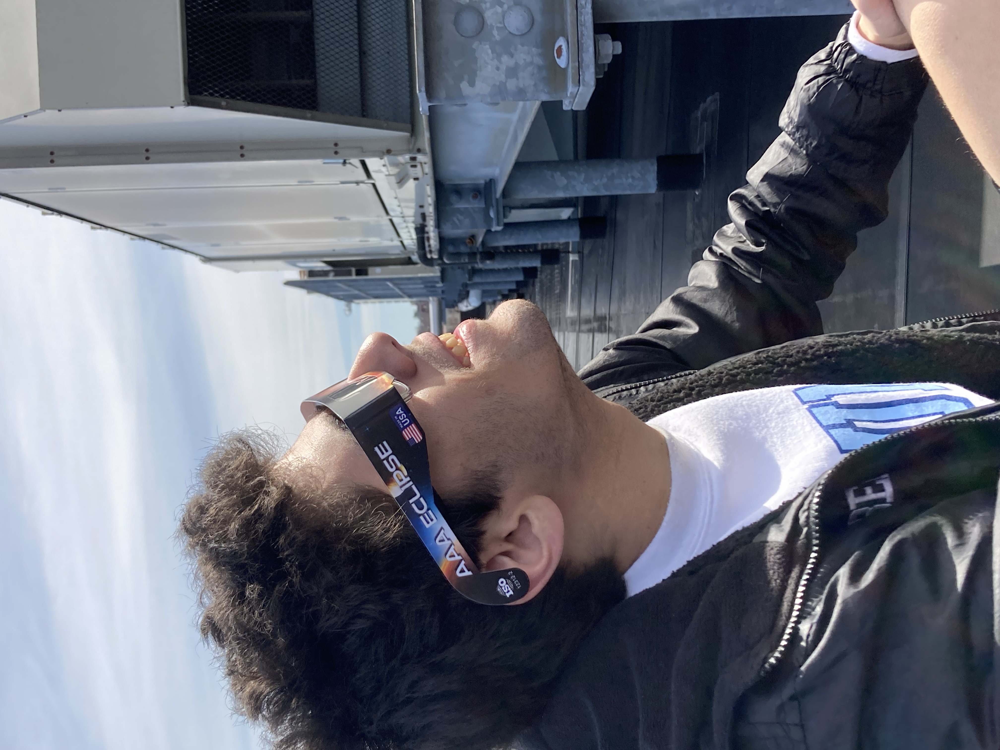
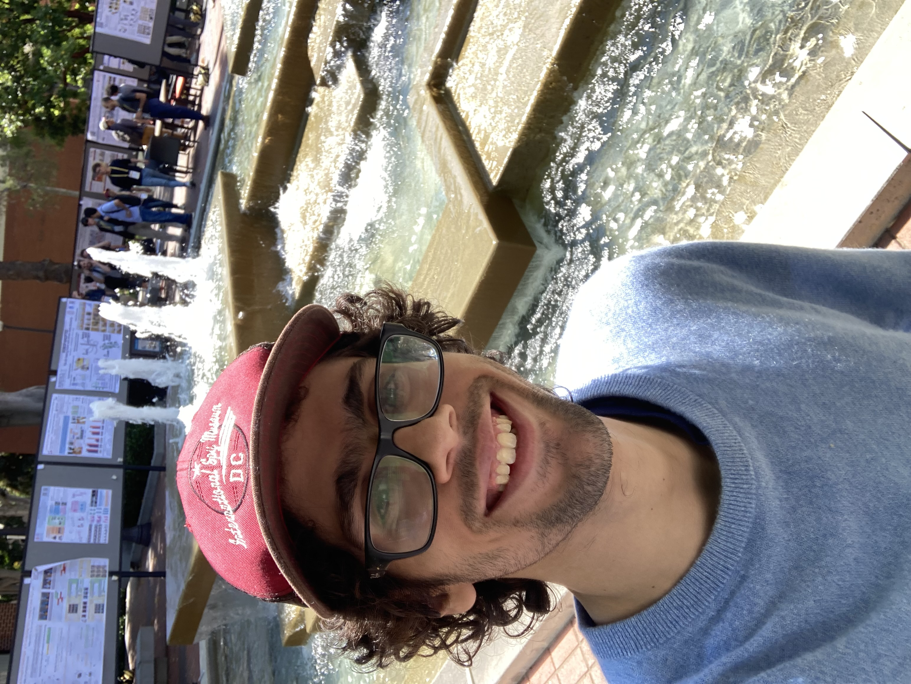
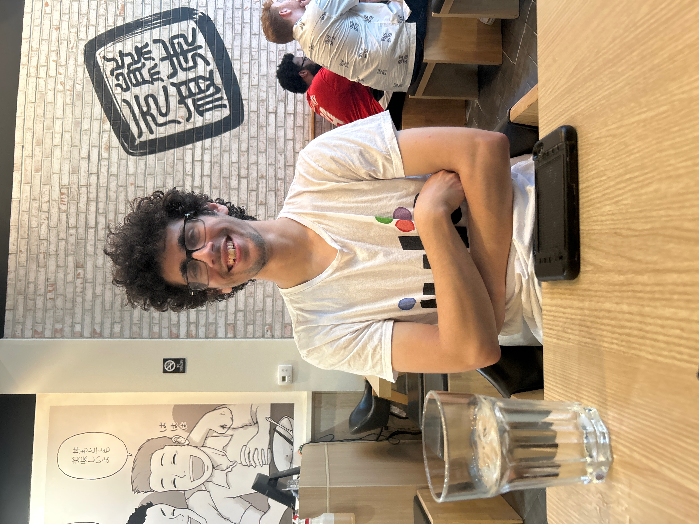
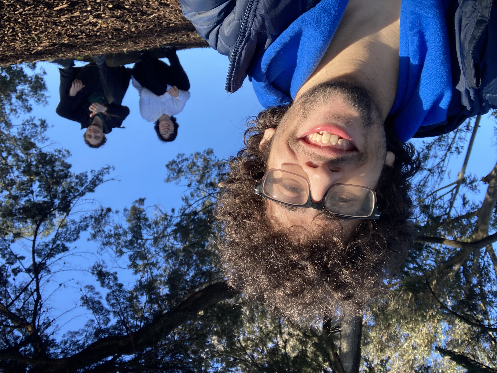
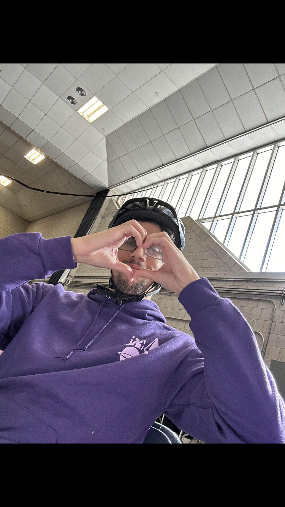

I am currently interested in exploring methods of relaxed and approximate equivariance in neural networks, theoretical characterizations and implications of distributional symmetry breaking, and applications of these ideas in molecular physics and materials science. Broadly, I want to relax symmetry constraints to make equivariant neural networks more scalable and adaptable while still keeping the symmetry as a relevant prior. From a theoretical point of view, I enjoy trying to assess the maximal extent to which equivariant functions and networks can be utilized, and where they can be fooled on "adversarial datasets." If you are interested in collaborating on any of these topics, or think I might fit the bill on some project, feel free to reach out.
I am advised by Professor Robin Walters with the
Geometric Learning Lab. I am also a visiting scientist with the AstroAI group at the Center for Astrophysics Harvard and Smithsonian with Cecilia Garraffo.
Here's
some material that's been occupying my mind lately, snail-mail me your thoughts!
Below, you can find a couple of pictures of me where I am most happy ^_^, usually when I am attending conferences with my
friends and traversing the local neighborhood.





Potpourri
Ask me about: Julia (the language), Julia (from Cowboy Bebop), Space Dandy, Swapfest at the Albany Street Garage, the 1980 Miracle on Ice, Jesper Bratt, Cities and Ambition, Sonny Boy, Biking in Boston, how I fell in love with science, and journal politics from a space cowboy turned symmetry skeptic. Tell me about your favorite experience while traveling. I've had 3 concussions (and counting). One time I contributed to
this wikipedia article.
Don't ask me about New Jersey.